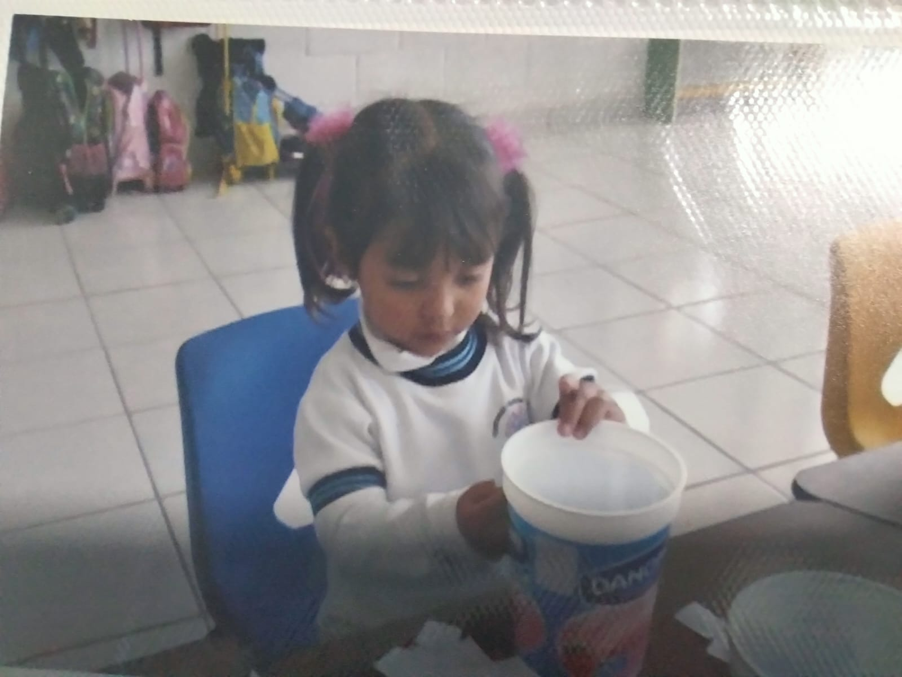
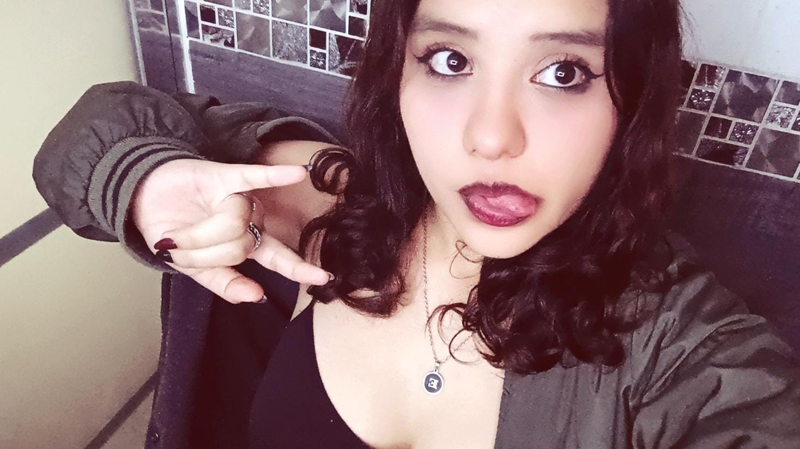
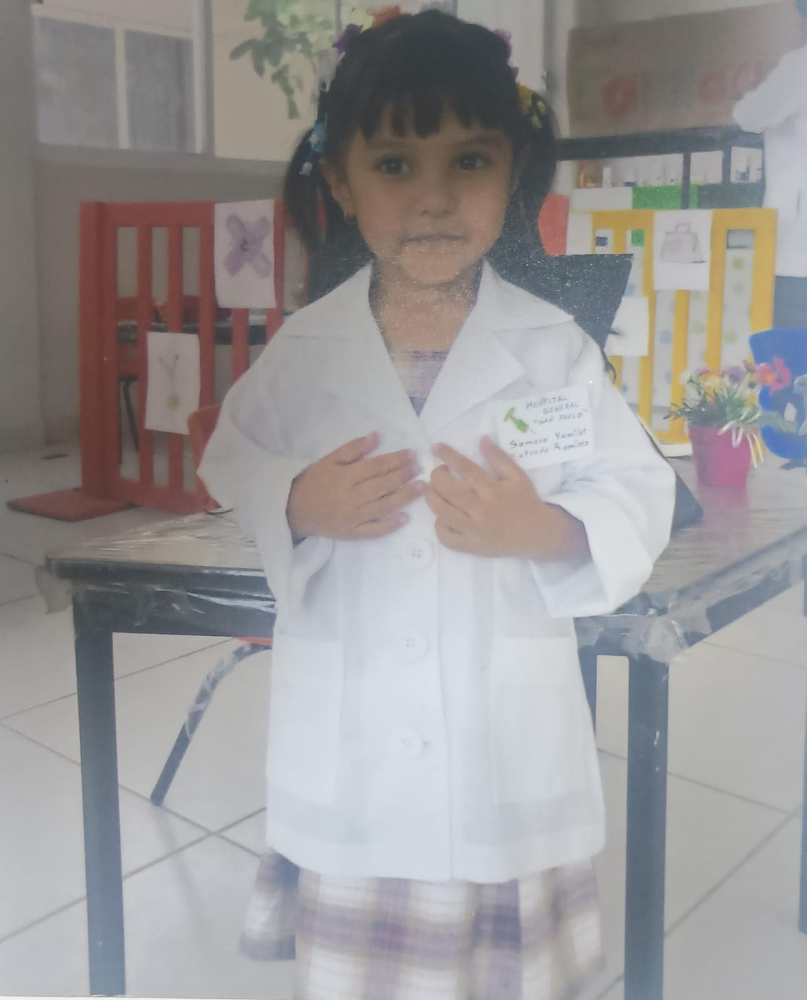

Mi nombre es Samara Estrada, cumplo años el 28 de octubre, actualmente tengo 15 años y estoy cursando el segundo semestre de bachillerato en el CECyT 3, vivo en Cuautitlán con mis padres y mis tres hermanas. Me considero una chica tímida sin embargo al momento en que entro en confianza suelo ser muy ocurrente, suelo ser muy olvidadiza y que deja las cosas al último momento pero mayormente si las termino haciendo, también suelo ser algo comprensiva y me gusta escuchar a los demás y poder ayudarlos. Me gustan demasiado los colores beige, negro y vino, también me gusta mucho tomar café o té, me gusta mucho decorar o hacer manualidades, mayormente estas se las hago a personas que quiero ya que es mi forma de demostrar cariño. Me gusta usar anillos y cadenas aunque no tengo muchos, me gusta maquillarme y hacer diferentes delineados a veces, al igual que pintarme las uñas y ponerme unos brillitos debajo del ojo. Escucho distintos género de música pero mis cantantes preferidos son: Rauw, Emilia y Chase Atlantic, también me gusta el baile sin embargo no lo he practicado como tal, me gusta igual natación aunque solo la practiqué entre preescolar y me gustaría retomarla. En secundaria aprendí a tocar un poco la guitarra lo cuál me gusto sin embargo lo deje, también me gusta dibujar aunque no siempre salgan como espero.
Una de mis metas es terminar la vocacional en tres años sin embargo actualmente no me ha ido muy bien ya que me he desconcentrado por ciertos factores y porque honestamente siento que no pertenezco aquí, me ha costado mucho adaptarme sin embargo se que lo lograre y me gustaría ingresar a la carrera técnica de Computación o Sistemas de Control Eléctrico, al principio me interesaba Sistemas Automotrices sin embargo con las visitas cambio mi punto de vista.
Uno de mis sueños es poder entrar a la carrera de Medicina en el Politécnico como mi madre y lograr después poder estudiar la especialidad de Neumología o Ginecología, aunque uno de mis sueños frustrados (por así decir) es estudiar algo relacionado con la escritura en la UNAM y lograr publicar una novela. Otros de mis sueños es poder tener un futuro estable, poder tener una familia con alguien que sepa lo que quiere y me ame por como soy y con dos pequeños para poder conocer varios lugares con ellos, teniendo una bonita familia.
|  |  |  |